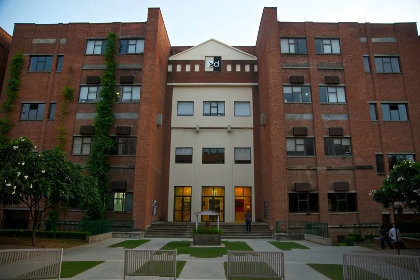
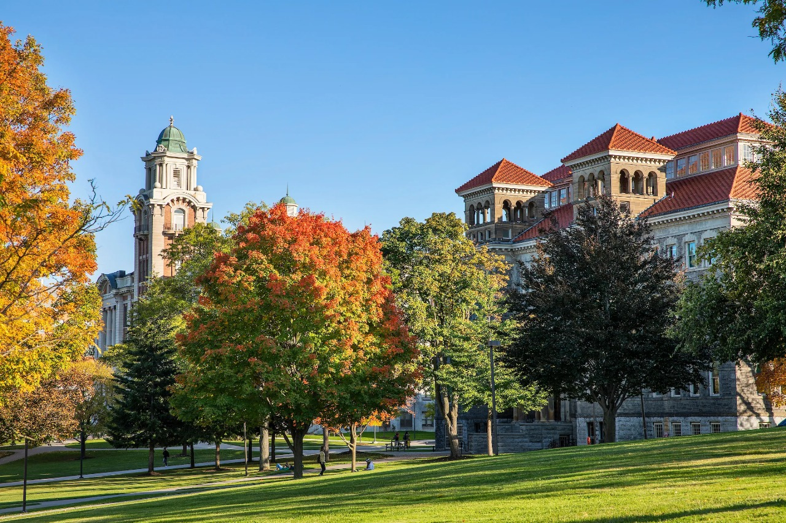

Innovations, Challenges & Applications
School of Computer Science & Engineering, IILM University, Gurugram
Final Submission Date: 15th April 2025
The rapid advancements in Artificial Intelligence (AI) are shaping the future of industries, society, and research. As AI continues to revolutionize multiple domains, it is crucial to explore its potential, address challenges, and uncover new frontiers. The "Exploring Artificial Intelligence Frontiers Innovations Challenges and Applications" symposium aims to bring together young investigators from different universities across the globe to put their understanding and review about the recent development in the domain of AI.
This symposium provides a global platform for young investigators to present their work, engage in meaningful discussions, and collaborate on pioneering ideas in AI.
| Event | Date |
|---|---|
| Submission Deadline | 30-03-2025 |
| Notification of Acceptance | 10-04-2025 |
| Final Submission | 19-04-2025 |
| Symposium Date | 29-04-2025 |
Rs. 500/- (No fee for participants having IILM or Syracuse affiliation)
Register Now1 Knowledge Centre, Golf Course Road, Plot. 71, Sector 53 Gurgaon-122003, Haryana, India www.iilm.edu

School of Computer Science & Engineering is the leading schools at IILM University, Gurugram that offers the B. Tech in Computer Science & Engineering, specializing in AI/ML, Data Science & Big Data Analytics, Cloud Computing, Cyber Security, Robotics Intelligence, Generative AI, Full Stack Development, and Immersive Technologies. Additionally, the school offers M.Tech. and Ph.D. programmes. In recent years, the significance of computing education has grown significantly, and the school stands as a leader, committed to shaping future technology pioneers. The primary objective is to empower and guide students to become industry leaders in cutting-edge computing technologies on both national and global scales. The esteemed faculty, with extensive experience, is dedicated to providing students with a unique blend of theoretical knowledge and practical skills necessary for success in the ever-changing fields of Computer Science.
From innovative research to practical projects, the school supports students in navigating the evolving landscape of computer science, encompassing areas such as Artificial Intelligence, Machine Learning, Cloud Computing, Cyber Security, Digital Forensics, Data Analysis, Big Data Technologies, Data Visualization, Generative AI, and Business Intelligence. The curriculum is designed to ensure students acquire a comprehensive understanding of the latest technologies and methodologies driving innovation in this data-driven era.
Aligned with the NEP2020 framework, the curriculum at the School of Computer Science & Engineering features a student-centric flexible structure, multidisciplinary learning, compulsory ability enhancement and skill enhancement courses, value-added courses, product design and development, as well as compulsory internships with multiple exit and entry points. Additionally, the school employs innovative teaching and learning methodologies such as Outcome-Based Education (OBE), Project-Based Learning (PBL), Interleaving (Context Switching), and Pair Programming to enhance the learning experience.
The school actively collaborates with leading industry partners, including HCL, Microsoft, Xebia, L&T, AWS, and others, to provide students with real-world exposure, internship opportunities, and hands-on experience with cutting-edge technologies. These collaborations ensure students are well-prepared to meet industry demands and contribute meaningfully to the technological advancements of the future.

Syracuse University is a student-focused R1 research university fueled by 150+ years of tradition, academic distinction, and a spirit of discovery. Founded in 1870, the University today has an enrollment of more than 22,000 undergraduates and graduate students representing all 50 states, more than 100 countries, and a variety of social and economic backgrounds. Students can choose from more than 200 majors, 100 minors, and 200 advanced degree programs across the University’s 13 academic units.
With a global footprint and a beautiful campus in the heart of New York state, our Orange community embraces innovation and cultivates a sense of belonging for all. Syracuse combines the supportive network of a small college with the superior resources and enhanced research and immersion opportunities needed for students to achieve their academic and professional goals.
Students will learn from world-class teachers, assist in critical research, collaborate across disciplines, and engage in the many-faceted intellectual, cultural, and social activities and events that comprise this vibrant campus community. In and out of the classroom, students will gain the knowledge, skills, and experience needed for them to excel in whatever field they choose to pursue.
The symposium will feature keynote talks by distinguished researchers and industry leaders in AI. Panel discussions will explore emerging AI trends, interdisciplinary collaborations, and ethical considerations
3 Best Paper Awards will be presented to outstanding research contributions.